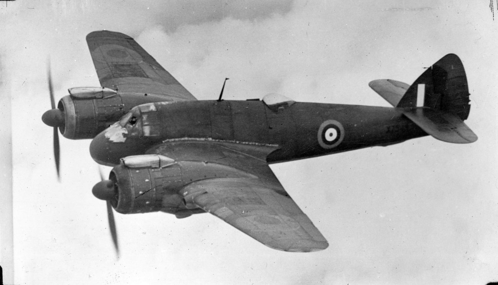
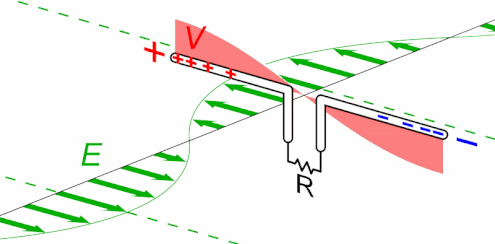
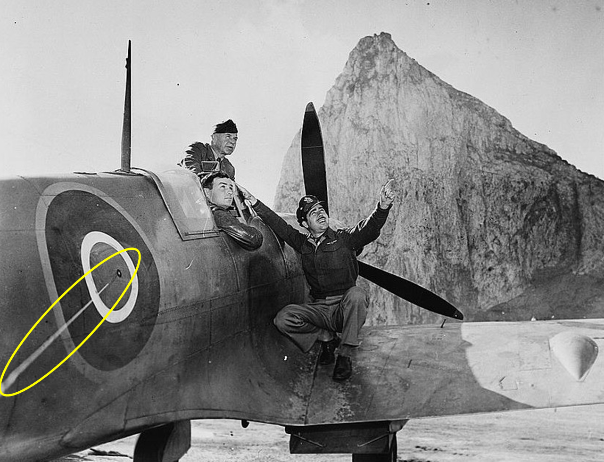

WW2의 IFF 이야기 (4) - 수평이냐 수직이냐
게시: 2024-12-12T06:30:55+09:00
솔로몬, 과달카날, 산타 크루즈 등에서의 해전 이후 미해군이 제출한 보고서를 보면 꼭 나오는 지적 사항이 있음. 바로 IFF에 대한 것. 크게 세 가지인데, 첫째, IFF 장비의 숫자가 부족하여 레이더를 이용한 전투기 관제가 어렵다는 것이고, 둘째는 IFF를 꺼놓고 다니는 조종사들이 있다는 것이며, 세째가 항모나 지상기지의 정비사들이 제대로 IFF를 정비하지 못하고 있다는 것. 요약하면 당장 사용 중인 IFF에 문제가 많다는 불평. 숫자 부족 문제는 이해가 감. 당시 미해군이 사용하던 것은 로열 에어포스가 개발하여 사용한 IFF Mark II으로서, 1940년 11월, 미국과 영국 간의 군사기술 교류 프로그램이었던 Tizard Mission의 일환으로 미군에 전달되었고, 미군은 이걸 SCR-535라는 제식명을 붙여서 대량 생산. 1942년 7월에 Philco사에 1만8천 개 세트를 주문했다니까, 아무리 서둘러 만든다고 해도 제조 및 테스트를 거쳐 태평양 전선의 항공기에 설치되기까지는 시간이 많이 부족했을 듯. 그런데 왜 미해군 조종사들은 IFF를 끄고 다녔으며, 왜 정비사들은 IFF의 정비에 서툴렀을까? 그에 대해서는 직접적인 설명을 찾지 못했는데, 다음 사건을 보면 대충 짐작이 갈 것 같음. 요약하면, 조종사나 정비사들이 일부러 끄고 다니거나 정비에 서투른 것이 아니라, IFF Mark II가 제대로 작동하지 않는 경우가 많지 않았나 하는 것. 1941년 어느 토요일 밤, 독일 루르 공업지대에 대한 야간 폭격을 마치고 귀환하던 Stirling 폭격기 한 대가 있었는데, 역시나 야간에 항로를 찾는 것은 전파 항법 장치가 있었음에도 꽤 어려운 일이었는지 항로를 잃고 엉뚱한 곳으로 비행함. 로열 에어포스의 방공 레이더에서는 정체를 알 수 없는 이 폭격기가 독일 루프트바페 폭격기라고 생각하고 공대공 레이더를 장착한 야간 전투기 보파이터(Beaufighter) 2대를 출격시킴. 아무리 지상 방공 레이더의 유도를 받고 또 자체 공대공 레이더를 장착하고 있더라도 야간에 적 폭격기를 격추하는 것은 쉬운 일은 아니었는데, 이 날 따라 운이 좋았던 건지 나빴던 건지 두 대의 보파이터 중 하나가 그 스털링 폭격기를 포착하고 성공적(?)으로 격추. 그런데 이렇게 kill을 기록한 보파이터는 그 기쁨을 제대로 만끽하기도 전에, 함께 출격했던 다른 보파이터에 의해 격추되어 버림. 다른 보파이터는 깜깜한 어둠 속에서 아군 보파이터를 자기가 격추해야 할 독일 폭격기로 오인했던 것.

(WW2 때 맹활약한 Bristol Beaufighter. 바다에서 얘를 만난 일본 해군은 이것이 뇌격기 또는 폭격기라고 생각하고 얘가 저공으로 접근해오면 얘의 접근 방향으로 함수를 돌렸다고. 물수제비 폭탄이든 어뢰든 측면을 노출하는 것이 제일 위험했기 때문. 그러나 그렇게 길게 길이 방향으로 늘어선 일본군 수송선이나 구축함에게 얘가 선사한 것은 대구경 기총소사...) 문제는 이 세 대의 영국 공군 항공기들이 모두 IFF Mark II를 장착하고 있었다는 것. 영국의 과학자이자 당시 영국 정부의 전파 연구소인 Telecommunications Research Establishment에서 일하고 있던 보우든(Bertram Vivian Bowden)은 기존 Mark II의 단점을 개선할 Mark III의 개발을 맡게 되었는데, 맡은 지 얼마 안 되어 로열 에어포스 요격기 사령부(Fighter Command) 사령관인 다우딩(Hugh Dowding)에게 호출됨. 다우딩 장군은 지난 토요일 밤에 발생한 이 스털링과 보파이터들의 비극에 대해 이야기해주며, 제대로 된 IFF를 만들라고 윽박지름. 실제로 미해군 조종사들과 관제사들의 불평에 따르면 IFF Mark II는 거의 50%의 확률로 제대로 된 피아식별을 해내지 못했음. 왜 이 모양이었을까? 영국제 물건이라서 고장이 잦았던 것일까? 실은 이건 전파의 편광(polarization)과 상관이 있었음. 전파의 편광이란 전자기파가 공간을 통해 전파될 때 전기장의 방향 특성을 말하는데, 보통 레이더에 사용되는 전파는 그 진행 방향에 수직으로 진동함. 또한, 편광에는 선형 편광(Linear Polarization)과 원형 편광(Circular Polarization), 타원 편광(Elliptical Polarization) 등의 종류가 있으나, 레이더에 사용되는 것은 거의 99% 선형 편광. 당시 레이더에서 전파를 송신하고 수신하는 안테나의 active element들은 쌍극자(dipole). 이 쌍극자를 가로로 눕혀 배열하면 수평 편광(horizontal polarization), 세로로 눕혀 배열하면 수직 편광(vertical polarization)이 되는 것.

(이 쌍극자의 선형 편광을 이해하기 쉽게 보여주는 GIF 동영상. 여기서는 수평 편광.) 그렇다면 WW2 당시 사용되던 레이더들은 대부분 수직 편광이었을까, 수평 편광이었을까? 대부분 수평 편광. 독일해군 U-boat 등에서는 일부 수직 편광을 쓰는 레이더를 운용하기도 했다고 하는데, 대부분의 레이더들이 수평 편광을 이용하는 것은 당연. 그것이 지표면 또는 해수면에서의 반사파 처리에 유리했고, 또 레이더가 찾아내고자 하는 주요 목표물인 항공기의 경우 날개 때문에 가로로 넓은 목표물이었기 때문.

(원조 레이더격인 chain home 레이더나 미해군의 SK 레이더나 모두들 가로로 놓인 쌍극자들을 사용) 잠깐, 항공기가 가로로 넓은 날개를 가지고 있어서 레이더들이 주로 수평 편광을 이용했다면, 만약 항공기가 직각으로 옆으로 누워서 비행하면 레이더에 좀 더 작게 잡히나? 이론상으로는 그러함. 물론 실제로는 날개보다도 회전하는 프로펠러가 더 많은 반사파를 만들었다고 하니까, 옆으로 누워서 비행해도 레이더에는 잘 잡혔을 듯. 그런데 이론상으로는 정말 수평 편광에는 가로로 길게 놓인 물체가 더 잘 잡혔고, 반대로 세로로 놓인 물체는 잘 안 잡혔음. 바로 여기서 IFF Mark II의 문제점이 드러남. 대부분의 레이더가 수평 편광을 이용하므로 그 전파를 받아서 '나는 아군'이라는 신호를 증폭하여 되돌려 보내려면 IFF 안테나도 반드시 수평으로 배열해야 했음. 게다가 그 안테나의 길이는 당시 레이더들이 사용하던 전파 파장의 길이거나, 혹은 1/2, 혹은 1/4 정도가 되어야 했음. 가령 CXAM 레이더에서는 200MHz의 전파를 사용했든데, 그 파장의 길이는 약 1.5m. 이론상으로는 그렇게 수평으로 늘어놓은 IFF 안테나가 아군 레이더의 전파 방향에 수직으로 딱 놓였을 때만 제대로 된 '나는 아군'이라는 신호 반송이 가능했음. 전에 보여드린 대로, 미군이나 영국군이나 모두 기체 동체의 라운델(roundel, 둥근 국적 마크)에서 삐져나온 안테나를 수평 꼬리날개 끝에 고정하는 형태로 IFF Mark II 안테나를 배치. 그런데 아군 레이더가 아군기를 오른쪽 방향에서 스캔할지 왼쪽 방향에서 스캔할지 알 수가 없으니 IFF 안테나를 기체의 좌우 양쪽 모두에 배열해야 했음. 그러다보니 부작용이... 항공기 속력이 느려짐! 이 IFF Mark II는 안테나를 포함한 전체 무게가 18kg에 달해 나름 무거웠는데, 특히 공기 저항 때문에 이걸 달면 Supermarine Spitfire 전투기의 속력이 시속 3.2km 정도 느려졌다고. 아무리 가느다란 와이어라고 하더라도, 이렇게 동체와 수평 꼬리날개 사이에 1.5m 길이의 와이어를 양쪽에 늘어뜨리고 날면 공기 저항이 그만큼 커졌기 때문.

(수퍼마린 스핏파이어 전투기의 라운델에서 삐져나오는 IFF Mark II의 안테나. 배경의 커다란 바위는 바로 지브랄타의 바위산.) 이렇게 많은 문제를 해결해야 했던 보우든 박사는 그닥 걱정하지 않았음. 이미 해결책을 머리 속에 가지고 있었기 때문. (다음 주에 계속)